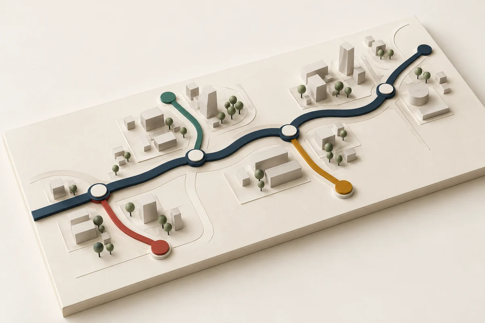

- Discoverالاستكشاف
- Configureالإعداد
- Migrateالترحيل
- Test & trainالاختبار والتدريب
- Go-liveالتشغيل
- Life after go-liveما بعد التشغيل
You are here: the first call
- Custom web appsتطبيقات ويب
- Integrationsالتكاملات
- Mobile appsتطبيقات الجوال
ERP delivery, from the first workshop to life after go-live.
We implement ERPNext and build the custom software around it. The consultant who runs your workshop is the one who configures and delivers your system.
One system, and the lines that run off it.
ERPNext is the trunk line. Apps and integrations join only where they earn their cost — that's why they run dashed until discovery confirms them.

-
ERPNext implementationتنفيذ ERPNext
Process workshops, configuration, data migration, testing, training and go-live — against a written scope.
- Finance & accounting
- Procurement & inventory
- Sales & point of sale
- HR & payroll
- Frappe Education
-
Custom web appsتطبيقات ويب مخصصة
Portals, internal tools and dashboards on Frappe, built beside your ERP rather than against it, so upgrades keep working.
-
Integrationsالتكاملات
APIs and file exchange between your ERP, HR, POS, e-commerce, banks and tax e-invoicing portals.
-
Mobile appsتطبيقات الجوال
Field, warehouse, attendance and approval apps on the same live data as head office.
Standard first, custom only where the business needs it.
- Consultant-led delivery
- No hand-off between the people who sell, design and build.
- One team across functions
- Finance, supply chain, HR and integration work on the end-to-end process together.
- Regional experience
- Delivery in Egypt, Saudi Arabia, the UAE and the GCC, including local tax requirements.
-
Discoverالاستكشاف
Process workshops and requirements traceability. Every gap is written down before a setting is touched.
-
Configureالإعداد
Standard setup, with gaps closed by rules and extensions.
-
Migrateالترحيل
Master data and opening balances loaded and reconciled, so your balances are right on day one.
-
Test & trainالاختبار والتدريب
Integration and user acceptance testing, and key-user training.
-
Go-liveالتشغيل
Cutover, then hypercare until operations settle.
-
Life after go-liveما بعد التشغيل
- Incident support
- Configuration changes
- New reports and workflows
- Integration monitoring
- ERP optimisation
Qcore is a young firm; its experience is not.
Work delivered by our consultants — what they did and how it helped.


The people named here deliver your project.
-
Abdelrahman Ali Husseinعبدالرحمن علي حسين
- Procurement
- Supply chain
- Inventory
SAP Certified · Sourcing & procurement
-
Youssef Hossamيوسف حسام
- Accounting
- Cost control
- Financial reporting
SAP Certified · S/4HANA Cloud
-
Moataz Mohamed Maghrabyمعتز محمد مغربي
- Core HR
- Payroll
- Performance
SAP Certified · SuccessFactors · Payroll
-
Adham Tarek Hamdyأدهم طارق حمدي
- APIs
- Data transformation
- Reports & forms
SAP Certified · Integration Developer
Straight answers, before the call.
Is ERPNext the right system for us?
Often, not always. On the first call we’ll tell you whether it fits — including when it doesn’t.
What if ERPNext doesn’t cover something we need?
We use the standard first. Where a real gap remains, we build it as a proper app on top rather than changing core, so upgrades keep working.
Your team’s background is SAP. Why ERPNext?
The method is the same: requirements, configuration, migration, testing and go-live. ERPNext gives growing businesses that discipline without enterprise licence costs.
Who will we actually work with?
The consultants named on this page. The person who runs your workshop configures your system and stays through go-live.
Let’s review your process together.
For growing businesses that need structured finance, inventory, procurement, sales or HR — without the overhead of a large implementation firm.